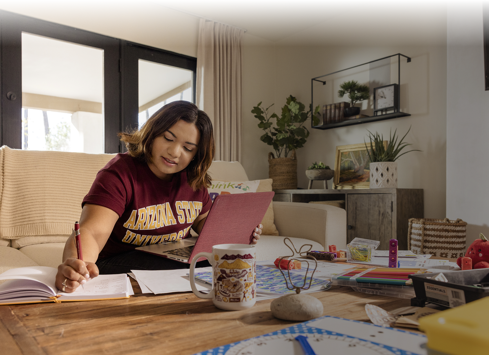
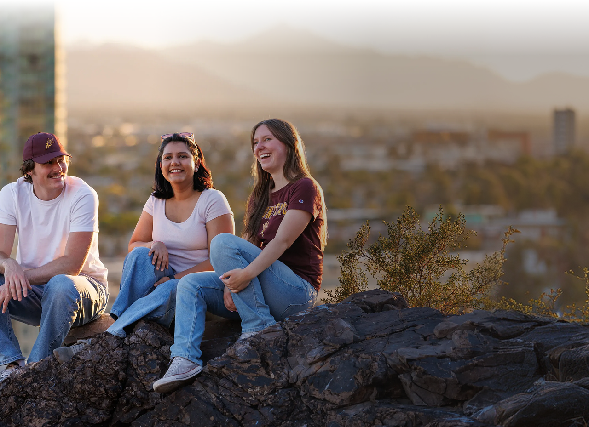
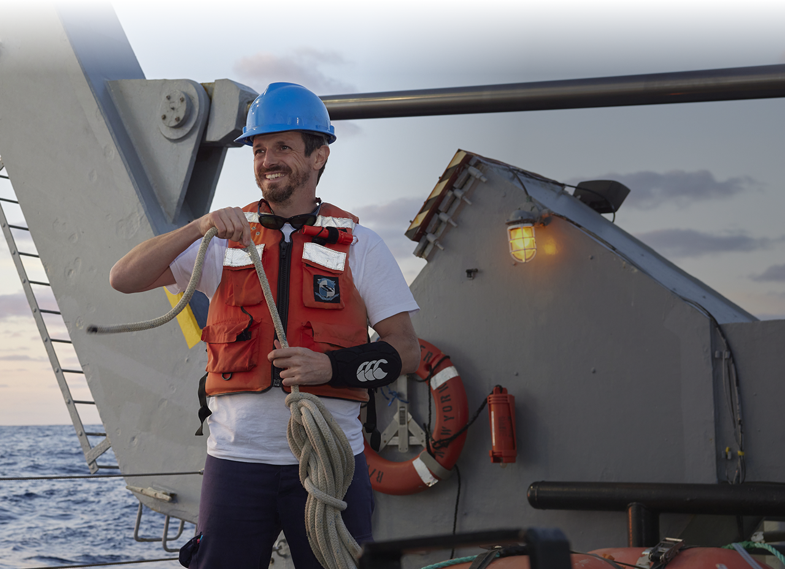
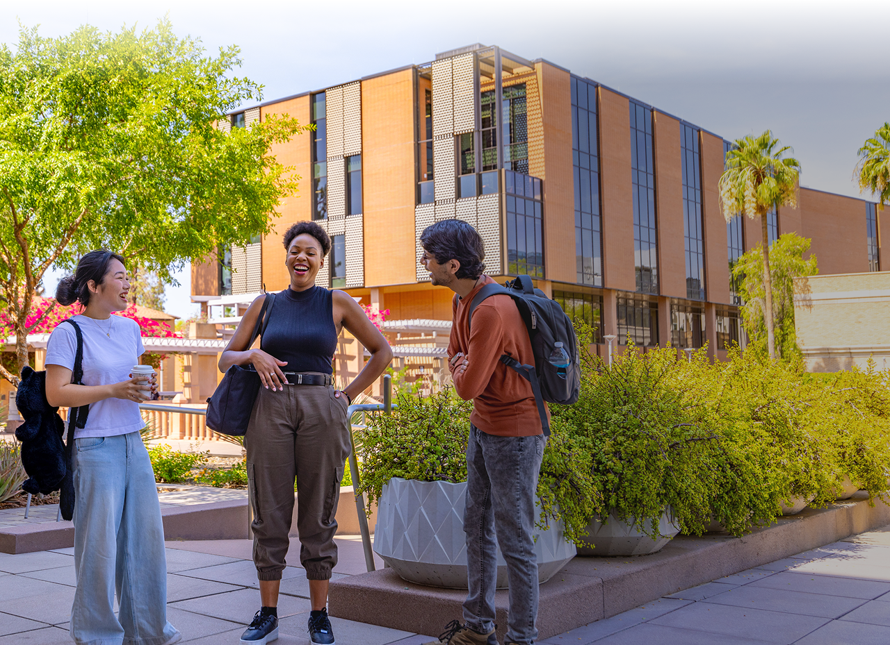

Design your degree
Your degree isn't one fixed product — it's a stack you assemble. Majors, minors, certificates, interdisciplinary specializations, built around what you want to do next.
Learn moreLearn your way
Same university, multiple ways in. On a campus in metro Phoenix or in downtown Los Angeles, fully online from anywhere, accelerated or hybrid — your life shapes the format, not the reverse.
Learn moreFind your people
Community here takes many shapes. Live in a residential college with classmates in your major, or join one of 1,000+ student organizations — academic, faith, identity, interest or service.
Learn moreBuild your experience
What you do outside class shapes who you become. Study abroad, civic engagement, internships with real industry partners — work that travels with you, and counts long after you leave.
Learn moreExplore costs and aid
College is an important investment that you are making. ASU is here to help make costs easier to understand and help you explore options that may help pay for college.
Learn more